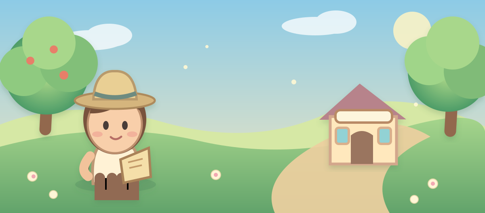

🎮 冒牌生｜自媒體學習小島
輕鬆玩一局，練出文案判斷力🌿 今日小島任務 · 約 3 分鐘
爆款文案觀察小島
兩個開場放在你面前，哪一個更容易讓人停下來？用幾道選擇題，練習看懂文案的吸引力從哪裡來。

每題會給你一個內容情境和兩種寫法。選完會看到拆解說明，最後拿到本回合分數。每種內容目標不同，沒有一句開場能保證爆紅，我們練的是「為什麼它可能更吸引目標觀眾」。
兩個開場放在你面前，哪一個更容易讓人停下來？用幾道選擇題，練習看懂文案的吸引力從哪裡來。

每題會給你一個內容情境和兩種寫法。選完會看到拆解說明，最後拿到本回合分數。每種內容目標不同，沒有一句開場能保證爆紅，我們練的是「為什麼它可能更吸引目標觀眾」。